Cosmology
Explore the wonders of our cosmos.
Our fantastic exhibition, 'The Sky Above Us', explores the night sky
and what we can see and know about the universe around us.
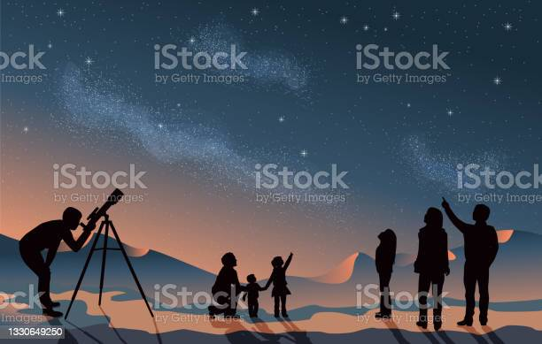Follow the journey of our solar exploration
from early Arab traders, to Galileo's telescope
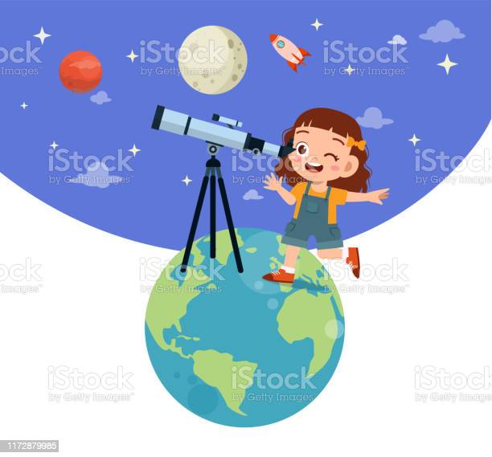to the latest exploration of the planets in our solar system.
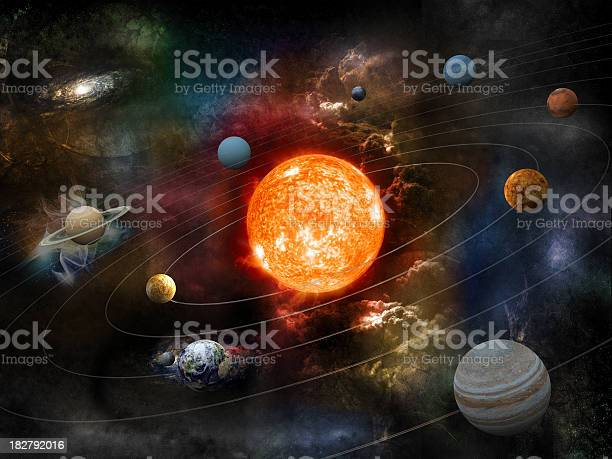Evolution
For centuries, philosophers and scientists
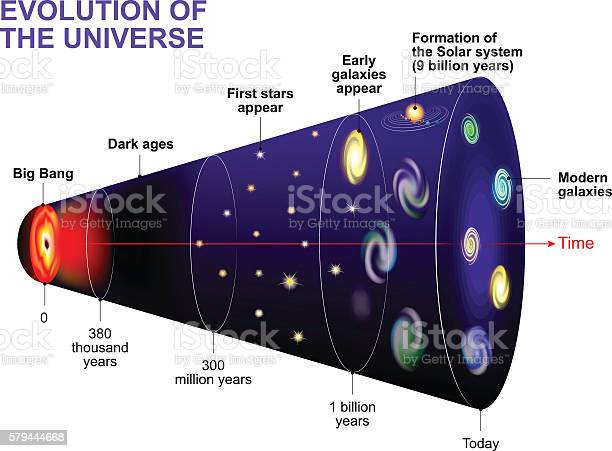have wrestled with the question of our origins.
Where do we come from?
how did we get here?
Since Darwin proposed his theory of evolution
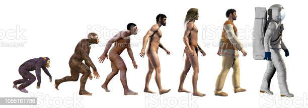we have had a framework for exploring
and understanding our place in this world.
Discover the origins of life on this planet
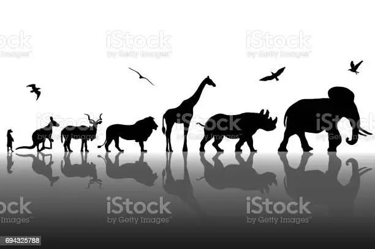and how the species we know today have evolved our time.
You can also take some time to meet a few of the creatures who didn't survive, including our Woolly Mammoth,
the Dodos
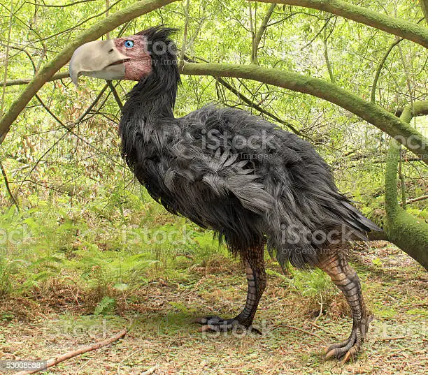and a number of dinosaurs too
Biology and Medicine
From micro-organisms to the human body
, major breakthroughs in biology are offering us unique insights into the great wonders of the tiny world.
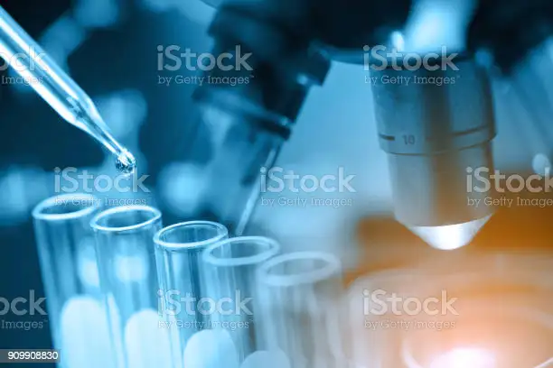For many people their life expectancy is much longer and their quality of life much improved, thanks to the growth of our understanding of medicine. Over a series of exhibits we explore the history of medicine and take a look at some major breakthroughs including the discovery of penicillin and
the first heart transplant.
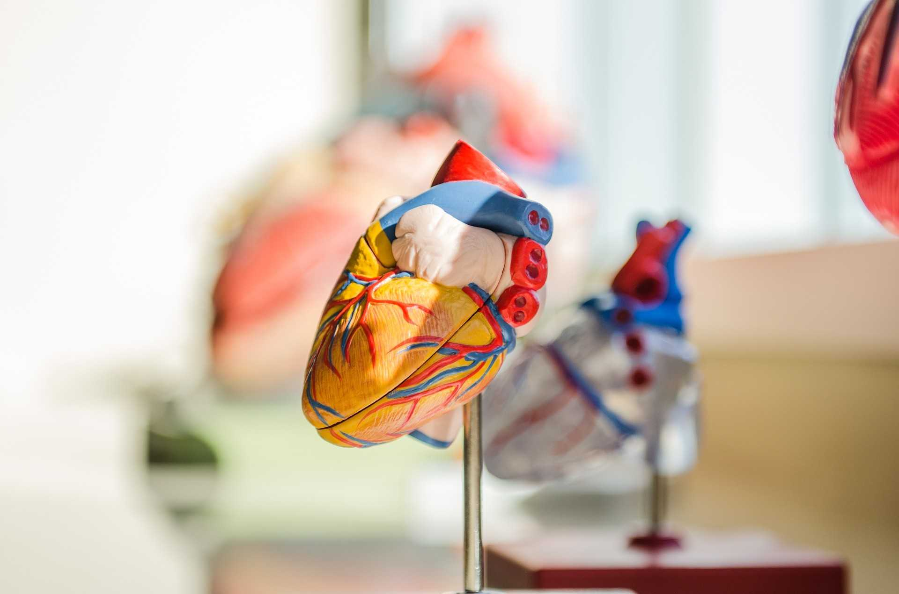Many of our great medicinal discoveries have come not only from the lab, but also from observing animals in the wild. Often our fellow creatures have beat us to it.
Robotics and AI
The information revolution is here
and robotics and artificial intelligence are the science of the future. From useful home applications of AI to industrial uses of robotics, the future is here.
You can even say hello and shake the hand of Rob the Robot.
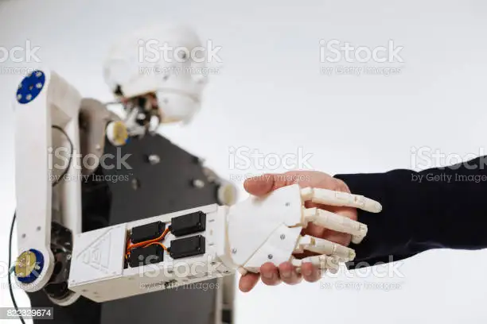Ecology
As we learn more and more of the impact humans are having on the planet
the more important it becomes that scientists explore how to create a sustainable future not just for humans but for the whole planet.
In our ecology section of the museum
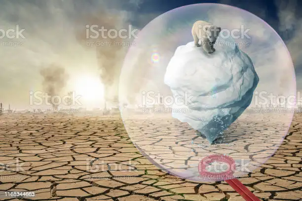we unpack the dangers we currently face including
global warming, extinction of species, and pollution.
But we also focus on the positive ways we can all contribute to a brighter future.
Cosmology
Explore the wonders of our cosmos.
Our fantastic exhibition,
'The Sky Above Us', explores the night sky
and what we can see
and know about the universe around us.
Follow the journey of our solar exploration
from early Arab traders, to Galileo's telescope
To the latest exploration
of the planets in our solar system.
Evolution
For centuries, philosophers and scientists
have wrestled with the question of our origins.
Where do we come from?
how did we get here?
Since Darwin proposed his theory of evolution
we have had a framework for exploring
and understanding our place in this world.
Discover the origins of life on this planet
and how the species we know today have evolved our time.
You can also take some time to meet a few of the creatures who didn't survive, including our Woolly Mammoth,
The Dodos
and a number of dinosaurs too
Biology and Medicine
From micro-organisms to the human body
major breakthroughs in biology are offering us
unique insights into the great
wonders of the tiny world.
For many people their life expectancy is much longer and their quality of life much improved, thanks to the growth of our understanding of medicine. Over a series of exhibits we explore the history of medicine and take a look at some major breakthroughs including the discovery of penicillin and
The first heart transplant.
Many of our great medicinal discoveries
have come not only from the lab
but also from observing animals in the wild.
Often our fellow creatures have beat us to it.
Robotics and AI
The information revolution is here
Robotics and artificial intelligence
the future is here
are the science of the future
From useful home applications of
AI to industrial uses of robotics
the future is here.
You can even say hello and
shake the hand of Rob the Robot
Ecology
As we learn more and more of the
impact humans are having on the planet
the more important it becomes that scientists explore how to create a sustainable future not just for humans but for the whole planet.
In our ecology section of the museum
we unpack the dangers we currently face including
global warming, extinction of species, and pollution.
But we also focus on the positive ways we can all contribute to a brighter future.